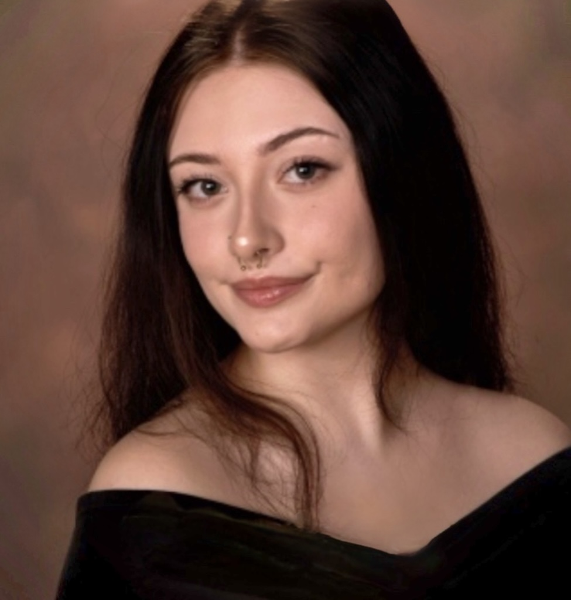

My name is Alaya Nyzio, I am a 19-year-old artist based in Bucks County, Pennsylvania, with a focus on realism, still life, abstraction, and mixed media. My primary interest is in creating detailed pencil portraits, particularly of celebrities, as well as capturing iconic frames from my favorite movies and shows.
I have always loved to paint and draw, but I began taking art seriously around age 12 after completing a self-portrait project. Since then, I have expanded my practice to include a variety of mediums. I often combine watercolor, oil pastels, colored pencils, and found items to create dynamic and textured works that blend the realistic with the abstract.
Outside of my art, I am a student pursuing a bachelor’s degree in Data Science. I am passionate about furthering the women in STEM movement and hope to use my degree to contribute to environmental efforts in the future.
